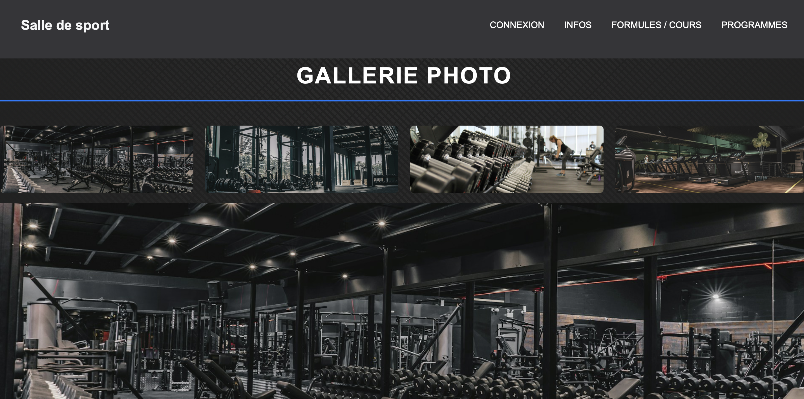
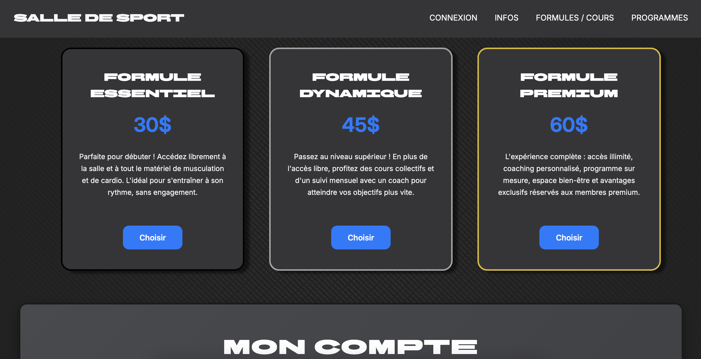
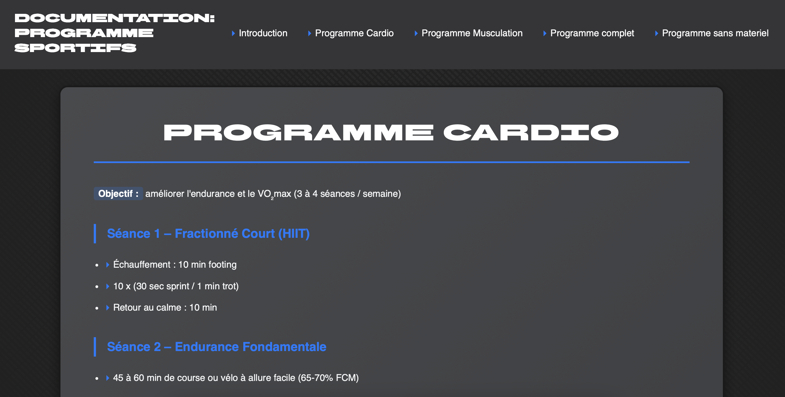
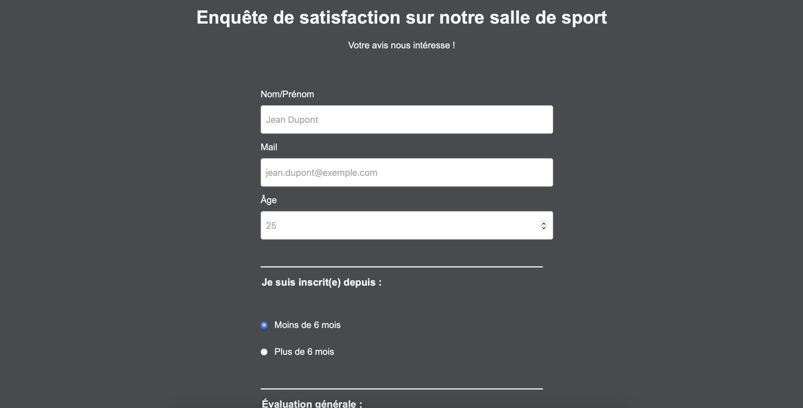

Ce portfolio présente mon parcours en développement web à travers différents projets, terminés ou en cours. J’y partage mes réalisations, mes expérimentations techniques et les compétences que je développe au fil de mon apprentissage. C’est un espace d’évolution, pensé pour montrer ma manière de concevoir, d’organiser et de faire progresser chaque projet.

Une page hommage qui n'en n'est pas vraiment une. Cette page presente la salle, son histoire, sa galerie photo et sa localisation.
L’objectif était de travailler la mise en page, la hiérarchie visuelle et l’adaptation responsive du contenu.

Une page d’accueil avec une vidéo de présentation, les différentes formules d’adhésion et un formulaire de contact.
Ce projet m’a permis de combiner design marketing et ergonomie utilisateur, tout en respectant les critères de responsive design.

Une page de documentation interactive présentant différents programmes sportifs.
Ce projet m’a permis d’expérimenter la structuration de contenu technique et la navigation fluide à travers une barre latérale.

Un formulaire destiné aux adhérents pour recueillir leurs retours et suggestions d’amélioration.
Ce travail m’a permis d’approfondir la conception de formulaires accessibles et intuitifs.